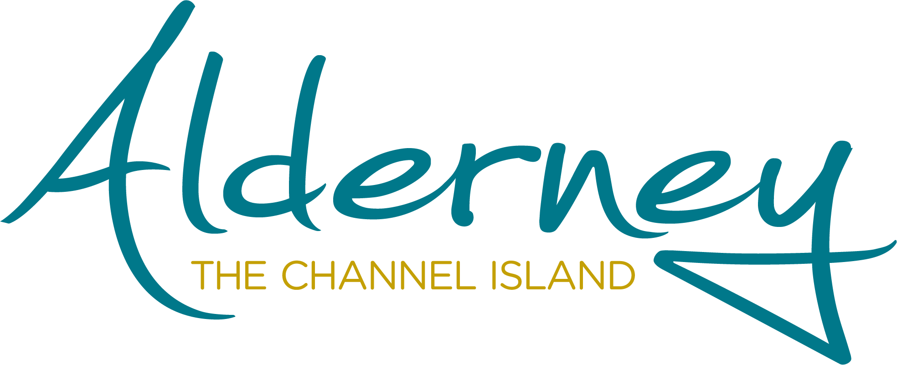
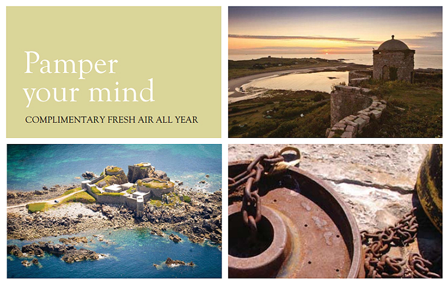
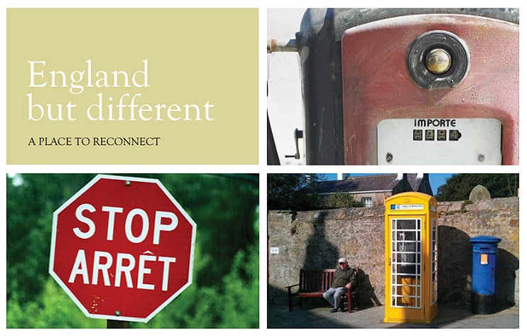
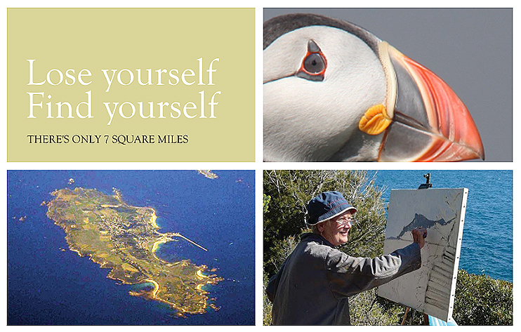
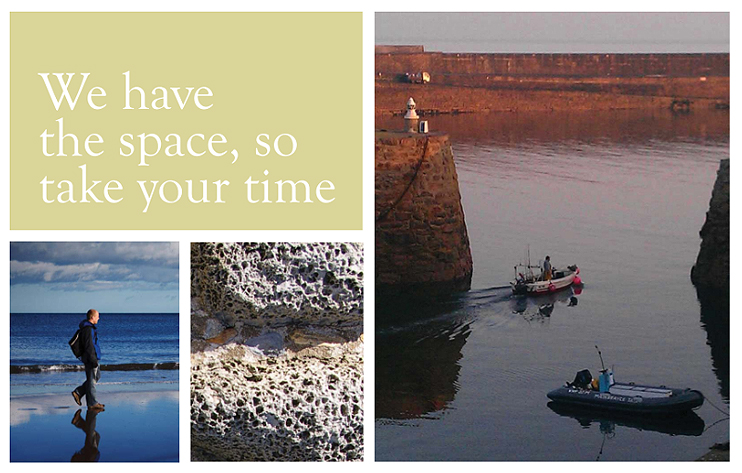
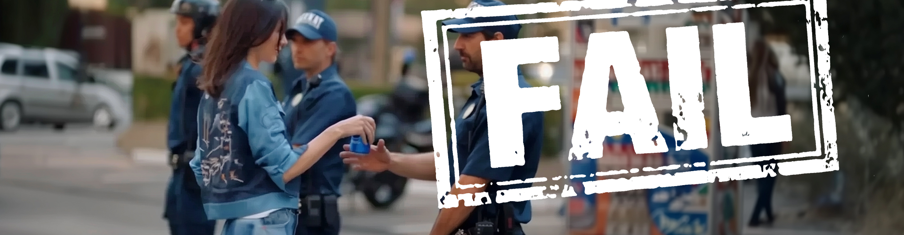

The Challenge

Limited budgets and fragmented activity meant Alderney was promoting itself widely without a clear, consistent narrative that residents, stakeholders and visitors could recognise.
Once this shared belief was clear, activity was organised around six niche communities that already had an emotional connection to the island: sailing, history, angling, flying, walking and wildlife.
The Movement Marketing Shift
| Old Campaign Thinking | New Movement Thinking |
|---|---|
| Tell people why to visit (broadcast promotion, generic messages, short-term attention) | Invite people to belong and participate (niche communities, lived experiences, reusable assets) |
| Run lots of disconnected activities and offers, hoping something lands | Start with strategic clarity so everyone shares the same belief |
| Thirteen separate programmes spreading effort thinly | Simplify to six focused strands, each linked to a passion community |
| Promote features and offers in isolation | Build experiences around passions (e.g., Living Islands combined wildlife and heritage into a single tourism product) |
The Team to Build It
Client and Programme Ownership
States of Alderney Tourism Programme
Client-side Lead
Alex Flewitt - Marketing Manager
Strategy and Delivery Lead
Paula Lain, operating as Be a Tiger
Collaborative Development
Residents and local stakeholders
Key Contributing Partners
Aurigny and tourism media outlets
The Tools We Had vs The Ones We Built
We Had
- • Tourism assets including sailing, history, angling, flying, walking and wildlife
- • Culture
- • Residents proud of their island
- • Tourism partners and travel channels
- • Press relationships and tourism media
We Built
- • A formal marketing strategy and brand proposition
- • Six focused marketing strands replacing thirteen programmes
- • The Living Islands tourism concept
- • An improved website and digital presence
- • Structured PR and partnership programmes
Authentic Campaign Examples




What Makes These Work:
1. Honest messaging: phrases such as 'England but different', '7 square miles' and 'Take your time' acknowledge limitations while celebrating uniqueness.
2. Real imagery: historic forts, working harbours, wildlife and genuine island life, not staged tourist photos.
3. Emotional benefits: 'Pamper your mind' and 'Lose yourself, find yourself' focus on the experience, not just activities.
4. Consistent voice: every piece reflects the same belief about authenticity and belonging.
Alderney Tourism: Impact at a Glance
Additional improvements: Social media reach increased ~50%, interactions grew by ~75%, and sector indicators improved including private aircraft visits, yacht night stays and charter angling activity.
Movement Design Checklist
The Movement Engine
Key Insight: When people recognise their own values in your story, they participate. When they participate, they advocate. This creates a repeatable marketing system that doesn't rely on constant campaigns.
Apply the Movement Marketing Framework
Reflection & Planning
Key Lessons from Alderney Tourism
Risks and Ethics: What Could Have Gone Wrong
Movement based campaigns can create powerful momentum, but they also carry responsibility. When a place invites people into a shared belief rather than simply promoting attractions, the message must remain honest, community grounded and sustainable.
The Alderney Movement Marketing Strategy worked because it respected these boundaries. Without that care, several risks could have emerged:
Client and Stakeholder Reflections
"We didn't 'do more marketing' - we built belief first so residents and partners wanted to champion it. They became our advocates and tourism numbers increased year on year whilst our budget decreased!"
Alex Flewitt,
Marketing Manager, States of Alderney
"Paula's hands-on approach and help with the comprehensive shaping of our proposition meant for the first time, we have a clear story about what Alderney stands for."
Roy Burke,
Chief Executive of Alderney
Movement Failure Case: Pepsi Social Unity

Source: BBC News, April 2017. Referenced for instructional purposes only.
When Movement Logic Is Ignored
A widely cited marketing failure illustrates the risks of promotion without authentic belief. Pepsi released an advertisement featuring Kendall Jenner portraying social unity during protest movements. The campaign attempted to align the brand with themes of activism and social justice. However, the message was perceived as trivialising serious social issues.
Pepsi had not built credibility or participation within the communities whose struggles the campaign referenced. The result was immediate backlash. The advertisement was withdrawn within 24 hours.
Movement Marketing Lesson:
Promotion without authentic belief creates resistance rather than momentum. Real movements grow from communities who already share the belief. They cannot be manufactured through messaging alone.
Frequently Asked Questions
Q: What is movement marketing strategy?
A: Movement marketing strategy is an approach that builds a community around a shared belief rather than running disconnected promotional campaigns. It prioritises participation and advocacy over advertising spend.
Q: How did Alderney Tourism use community-led tourism marketing?
A: Alderney ran stakeholder workshops to discover what the island genuinely stood for, then organised activity into six niche passion communities - sailing, history, angling, flying, walking and wildlife - each anchored to the same belief statement.
Q: Is authentic brand marketing for small businesses realistic without a big budget?
A: Yes. The Alderney model reduced media placement costs by 25–30% while growing reach, because partners and residents distributed content organically once they believed in the story.
Q: What is MUVIST Academy?
A: MUVIST Academy is a movement marketing education platform founded by Paula Lain and Marshall Gill. It teaches SMEs and charities how to build community-led growth systems rather than relying on paid campaigns.
Need more ideas you can use?
Check out the ready 30-day movement campaign plans for a wildlife conservation charity, a community hospice, a family-run construction firm and an independent boutique hotel/B&B, available to download with this lesson.